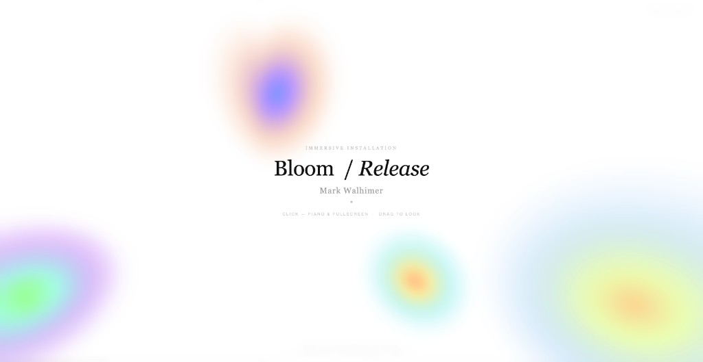

Featured
Bloom / Four Walls — live embed when you open this page on the site (HTTPS)
Featured
Cathedral layer
Mark Walhimer (1964) is a digital installation artist and museum designer with twenty years of experience creating interactive public spaces. His practice moves between the computational and the spatial — finding in code the same systems thinking logic that underlies the design of institutions.
Managing partner of Museum Planning, LLC. Executive Director, Museum of Arts & Sciences (Macon, Georgia). Fulbright Specialist. Author of Museums 101 and Designing Museum Experiences (Bloomsbury). Former design consultant, Smithsonian Institution. Faculty, Georgia Institute of Technology and Tec de Monterrey.
Began in the studio of Judy Pfaff, 1985. Exhibited at MIRADAS TANGENTES, Madrid, 2026.